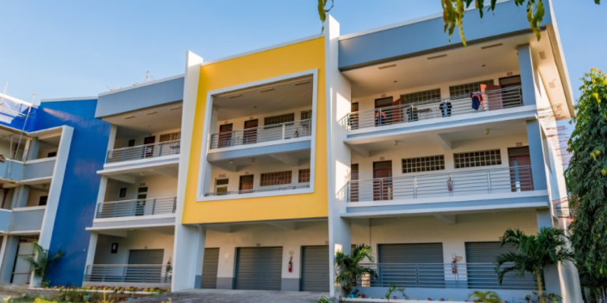
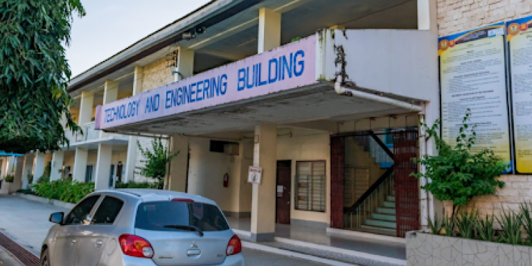

A testament to CTU Danao’s commitment to advancing the institution’s premier brand, COE building provides a training ground for future champions, topnotch graduates, and engineers in five (5) engineering disciplines. Its classrooms and laboratory rooms are equipped with the necessary instruments and tools to deliver quality instruction and skills training to every engineering student.
The CME Building
The CME building is a home of hospitality and tourism trailblazers. This four-story building provides an avenue conducive to academic learning of theoretical contents and practical skills in management, entrepreneurship, leadership, and other essential business services.

The CEAS Building
The three-story building of the College of Education sits comfortably behind the newly-constructed administration building. The structure reflects modern-day classroom settings, equipped with Interactive White Boards, Smart Television sets, and furniture suited to students' needs. Each classroom's facilities would surely make learning more fun and exciting since the set-up permits ease in the group and individual activities, collaboration, and other student-centered activities. Furthermore, the Office of the College Dean and the office staff are on the second floor, while the faculty room is located on the third floor. The University provides well-maintained toilets on each floor.

The COT Building
This edifice is a convergence of the diverse industrial courses offered in CTU Danao. It houses the equipment, tools, and materials needed for an industrial technology student to meet the course's competencies. It allows the learner to holistically develop the "total being" while performing the technology-related competencies.